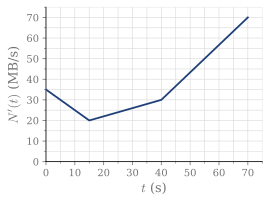
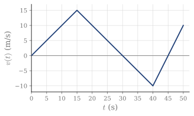

5.10 Ejercicios
Valor medio
Ejercicio 5.1
Estudiar si puede aplicarse el teorema de la media a estas funciones en los intervalos dados. Calcular, si existen, los puntos z en los que f(z)=\bar f.
- f(x)=3x^2 en [-1,4]
- f(x)=\sin x en [0,\pi]
- f(x)=\begin{cases}x & x<0\\ 4-x & x\ge0\end{cases} en [-2,2]
- f(x)=\begin{cases}x & x<0\\ 1-x & x\ge0\end{cases} en [-3,3]
(a) z=\sqrt{13/3}. (b) z_1=\arcsin\frac2\pi, z_2=\pi-\arcsin\frac2\pi. (c) No aplicable; no existe z. (d) No aplicable, pero z_1=-1, z_2=2.
Ejercicio 5.2
Calcular el valor de a para que pueda aplicarse el teorema de la media a la función f(x)=\begin{cases}x+1 & x\le1\\ 3-ax^2 & x>1\end{cases} en [-3,3]. Con ese valor, calcular los puntos a los que se refiere el teorema.
a=1; z_1=-\frac{13}{9}, z_2=\frac{\sqrt{31}}{3}.
Ejercicio 5.3
Sea f(x)=\begin{cases}\ln x & 1\le x\le2\\ ax^2+b & 2<x\le3\end{cases}, con a y b reales. (2019/20 AT)
- Obtener la condición que deben cumplir a y b para que f sea continua en [1,3].
- En ese caso, calcular a y b para que el valor medio de f en [1,3] sea \frac12(3\ln2-1).
- Para esos valores, ¿es f derivable?
Indicación: \int\ln x\,dx=x\ln x-x+C.
(a) 4a+b=\ln2. (b) a=0, b=\ln2. (c) No.
Ejercicio 5.4
N(t) es la cantidad acumulada de MB descargados hasta el instante t, en segundos. La Figura 5.17 muestra su velocidad N'(t). En t=5 empieza a transferirse un archivo de 1475 MB. (2011/12 3E)
- Hallar el instante en que termina la descarga.
- Hallar el valor medio de la aceleración N''(t) durante la descarga.
- ¿Se puede asegurar con el teorema de la media que en algún instante N''(t) iguala ese valor medio? ¿Ocurre?

Figura 5.17. Velocidad de descarga N'(t).
(a) t=55 s. (b) 0.4 MB/s^2. (c) El teorema no lo asegura, porque N''(t) no es continua; aun así, ocurre en todo el tramo (15,40).
Teorema fundamental y regla de Barrow
Ejercicio 5.5
La Figura 5.18 muestra la velocidad v(t) de una partícula que se mueve en una dimensión, con x(0)=0, x en metros y t en segundos. (2023/24 3E)
- ¿En qué posición está en t=50 s?
- ¿Cuándo se ha recorrido un espacio de 275 m?
- Calcular la velocidad media en [0,50]. ¿Se puede aplicar el teorema de la media a v(t)? ¿En cuántos puntos se cumple?
- ¿Se puede aplicar el teorema de Lagrange a v(t) en [0,50]? Encontrar, si existen, los puntos en los que se cumple.
- ¿Se puede aplicar el teorema de Lagrange a x(t) en [0,50]?

Figura 5.18. Velocidad de la partícula.
(a) 175 m. (b) t=40 s. (c) \bar v=\frac72 m/s; sí; en tres puntos: t=\frac72, \frac{53}{2} y \frac{187}{4}. (d) No, v no es derivable; no hay ningún punto. (e) Sí, y se cumple en los mismos puntos que en (c).
Funciones integrales
Ejercicio 5.6
Calcular las siguientes funciones integrales y comprobar que son derivables:
- F(x)=\displaystyle\int_0^x f(z)\,dz, con f(z)=\begin{cases}z & z\le2\\ 2 & z>2\end{cases}
- F(x)=\displaystyle\int_0^x |\sin z|\,dz, con 0<x<2\pi
(a) F(x)=\frac{x^2}{2} si 0<x\le2 y F(x)=2x-2 si x>2. (b) F(x)=1-\cos x si 0<x\le\pi y F(x)=3+\cos x si \pi<x<2\pi.
Ejercicio 5.7
Sin calcular las integrales, derivar:
- H(x)=\displaystyle\int_0^{x^2}\sqrt{1+t^2}\,dt
- H(x)=\displaystyle\int_0^{x^2}e^{t^2}\,dt
- H(x)=\displaystyle\int_1^{x^4}\sec t\,dt
- H(x)=\displaystyle\int_1^{\sin x}e^t\,dt
(a) 2x\sqrt{1+x^4}. (b) 2x\,e^{x^4}. (c) \dfrac{4x^3}{\cos x^4}. (d) e^{\sin x}\cos x.
Ejercicio 5.8
Sea f(x)=3+\displaystyle\int_0^x\frac{1+\sin t}{2+t^2}\,dt. Sin calcular la integral, obtener su polinomio de Maclaurin de grado 1. (2019/20 6E)
p(x)=3+\frac{x}{2}.
Ejercicio 5.9
Sea F(x)=\displaystyle\int_0^x\frac{dt}{t^2+2t+2}. (2020/21 6E)
- ¿Toma F el valor 0? ¿Dónde?
- Estudiar su crecimiento en \mathbb{R}.
- Estudiar su concavidad en \mathbb{R}.
(a) Sí, en x=0. (b) Creciente en \mathbb{R}. (c) Cóncava en (-\infty,-1) y convexa en (-1,\infty); punto de inflexión en x=-1.
Ejercicio 5.10
Sea f(x)=\begin{cases}x & x\in[0,1)\\ e^{1-x} & x\in[1,2]\end{cases}.
- Dibujar f.
- Calcular su función media en [0,x], \bar f(x)=\dfrac1x\displaystyle\int_0^x f(t)\,dt.
- Calcular el valor medio de f en [0,2].
(b) \bar f(x)=\frac{x}{2} en (0,1) y \bar f(x)=\frac1x\left(\frac32-e^{1-x}\right) en [1,2]. (c) \frac34-\frac{1}{2e}.
Primitivas y cambio de variable
Ejercicio 5.11
Calcular las siguientes integrales inmediatas:
- \displaystyle\int x\sin(x^2)\,dx
- \displaystyle\int\frac{e^x}{1+e^{2x}}\,dx
- \displaystyle\int\frac{17x}{\sqrt[3]{6x^2+8}}\,dx
- \displaystyle\int\sec^2x\sqrt{\tan x}\,dx
- \displaystyle\int\frac{\ln x}{x}\,dx
- \displaystyle\int\frac{dx}{x\ln x}
- \displaystyle\int\frac{\cos\sqrt x}{\sqrt x}\,dx
- \displaystyle\int\frac{x}{\sqrt{1-x^4}}\,dx
- \displaystyle\int\sin x\cos x\,dx
(a) -\frac12\cos x^2+C. (b) \arctan e^x+C. (c) \frac{17}{8}(6x^2+8)^{2/3}+C. (d) \frac23\tan^{3/2}x+C. (e) \frac12\ln^2x+C. (f) \ln|\ln x|+C. (g) 2\sin\sqrt x+C. (h) \frac12\arcsin x^2+C. (i) \frac12\sin^2x+C.
Métodos de integración
Ejercicio 5.12
Calcular utilizando integración por partes:
- \displaystyle\int x\ln x\,dx
- \displaystyle\int x\sin x\,dx
- \displaystyle\int\ln x\,dx
- \displaystyle\int\arcsin x\,dx
- \displaystyle\int(x^2-2x+5)\,e^{-x}\,dx
- \displaystyle\int x\sin x\cos x\,dx
- \displaystyle\int\frac{\ln\sqrt x}{x^2}\,dx (2011/12 3E)
(a) \frac{x^2}{2}\ln x-\frac{x^2}{4}+C. (b) \sin x-x\cos x+C. (c) x\ln x-x+C. (d) x\arcsin x+\sqrt{1-x^2}+C. (e) -(x^2+5)\,e^{-x}+C. (f) \frac18\sin2x-\frac14x\cos2x+C. (g) -\frac{\ln x+1}{2x}+C.
Ejercicio 5.13
Calcular las siguientes integrales de funciones racionales:
- \displaystyle\int\frac{4x^2}{x^2+4}\,dx
- \displaystyle\int\frac{x^2+3}{x^2-1}\,dx
- \displaystyle\int\frac{2x^2-3x+2}{x^3+x}\,dx
- \displaystyle\int\frac{x^2}{x^2+2x+5}\,dx
(a) 4x-8\arctan\frac x2+C. (b) x+2\ln\left|\frac{x-1}{x+1}\right|+C. (c) 2\ln|x|-3\arctan x+C. (d) x-\ln(x^2+2x+5)-\frac32\arctan\frac{x+1}{2}+C.
Ejercicio 5.14
Calcular las siguientes integrales de funciones trigonométricas:
- \displaystyle\int\cos^2x\,dx
- \displaystyle\int\sin^2x\,dx
- \displaystyle\int\cos^3x\,dx
- \displaystyle\int\frac{\sin x}{\cos x\,(1+\cos^2x)}\,dx
- \displaystyle\int\frac{dx}{\tan^2x\,(1+3\cos^2x)}
- \displaystyle\int\sin^2x\cos^2x\,dx
- \displaystyle\int\sin^2x\cos^5x\,dx
- \displaystyle\int\frac{\sin^2x}{\sin^2x-4\cos^2x}\,dx (2018/19 3E)
(a) \frac x2+\frac14\sin2x+C. (b) \frac x2-\frac14\sin2x+C. (c) \sin x-\frac13\sin^3x+C. (d) -\ln|\cos x|+\frac12\ln(1+\cos^2x)+C. (e) -\frac{1}{4\tan x}-\frac18\arctan\frac{\tan x}{2}+C. (f) \frac x8-\frac1{32}\sin4x+C. (g) \frac13\sin^3x-\frac25\sin^5x+\frac17\sin^7x+C. (h) \frac x5+\frac15\ln\left|\frac{\tan x-2}{\tan x+2}\right|+C.
Ejercicio 5.15
Calcular las siguientes integrales de funciones irracionales:
- \displaystyle\int\frac{\sqrt x}{\sqrt[4]{x^3}+1}\,dx
- \displaystyle\int\frac{\sqrt x-2\sqrt[3]{x^2}+1}{\sqrt[4]{x}}\,dx (2012/13 3E)
- \displaystyle\int\frac{\sqrt{x+4}}{x}\,dx
- \displaystyle\int\frac{dx}{\sqrt{8-5x^2}}
- \displaystyle\int\sqrt{1+x^2}\,dx
(a) \frac43\left(x^{3/4}-\ln\left(x^{3/4}+1\right)\right)+C. (b) \frac45x^{5/4}-\frac{24}{17}x^{17/12}+\frac43x^{3/4}+C. (c) 2\sqrt{x+4}+2\ln\left|\frac{\sqrt{x+4}-2}{\sqrt{x+4}+2}\right|+C. (d) \frac{1}{\sqrt5}\arcsin\left(x\sqrt{\frac58}\right)+C. (e) \frac12\left(x\sqrt{1+x^2}+\ln\left|x+\sqrt{1+x^2}\right|\right)+C.
Otras aplicaciones de la integral
Ejercicio 5.16
Sea D el recinto 0<y<e^x, 1\le x\le2. Calcular su área y el volumen generado al girar D alrededor de OX.
A=e^2-e; V=\frac\pi2(e^4-e^2).
Ejercicio 5.17
Calcular el área del recinto limitado por y=x^2+2x+2, su recta tangente en el mínimo y su recta tangente de pendiente 6.
A=\frac94.
Ejercicio 5.18
Sea D el recinto limitado por y\le\sqrt{x/2}, y\ge|1-x| y 0\le x\le2. Calcular su área y el volumen generado al girar D alrededor de OX.
A=\frac{13}{24}; V=\frac{9\pi}{16}.
Ejercicio 5.19
El área limitada por y=ax, con a>0, e y=x^2 vale \frac92. Calcular a.
a=3.
Ejercicio 5.20
Sea D el recinto limitado por y^2=4+x y x=2. Calcular su área y el volumen generado al girar D alrededor de OX.
A=8\sqrt6; V=18\pi.
Ejercicio 5.21
Sea la elipse \dfrac{x^2}{25}+y^2=1. Calcular el volumen del elipsoide generado al girarla alrededor de OX y alrededor de OY. (2021/22 7E)
Alrededor de OX: \frac{20\pi}{3}. Alrededor de OY: \frac{100\pi}{3}.
Ejercicio 5.22
Sea D el recinto limitado por y=2x-x^2 y sus rectas tangentes en los puntos de corte con OX. Calcular su área y el volumen generado al girar D alrededor de OX. (2018/19 3E)
A=\frac23; V=\frac{8\pi}{5}.
Ejercicio 5.23
Calcular la longitud de los siguientes arcos:
- y=x^2+x-2, con x\in[-2,1]
- y=\ln(\cos x), con 0\le x\le\frac\pi4 (2012/13 3E)
(a) l=\frac12\left(3\sqrt{10}+\ln\left(3+\sqrt{10}\right)\right)\approx5.65. (b) l=\frac12\ln\left(3+2\sqrt2\right).
Integrales impropias
Ejercicio 5.24
Calcular las siguientes integrales impropias de primer tipo:
- \displaystyle\int_{-\infty}^0e^x\,dx
- \displaystyle\int_0^\infty\frac{dx}{\sqrt{e^x}}
- \displaystyle\int_0^\infty x\,e^{-x}\,dx
- \displaystyle\int_{-\infty}^\infty\frac{dx}{e^x+e^{-x}}
- \displaystyle\int_{-\infty}^\infty\frac{dx}{x^2+4}
- \displaystyle\int_0^\infty\frac{dx}{\sqrt x\,(1+x)} (2014/15 3E)
- \displaystyle\int_1^\infty x^n\,dx, con n\in\mathbb{Z}
- \displaystyle\int_{-\infty}^\infty e^{-a|x|}\,dx, con a\in\mathbb{R}
(a) 1. (b) 2. (c) 1. (d) \frac\pi2. (e) \frac\pi2. (f) \pi. (g) -\frac{1}{n+1} si n<-1; divergente en otro caso. (h) \frac2a si a>0; divergente en otro caso.
Ejercicio 5.25
Estudiar las siguientes integrales impropias de segundo tipo:
- \displaystyle\int_{-1}^1\frac{dx}{x}
- \displaystyle\int_0^5\frac{dx}{(2-x)^4} (2013/14 3E)
(a) Divergente, con valor principal 0. (b) Divergente.
Ejercicio 5.26
Sea f(x)=0 si x<0 y f(x)=\dfrac{6x}{(1+3x^2)^2} si x\ge0. Comprobar que \displaystyle\int_{-\infty}^{\infty}f(x)\,dx=1. (2022/23 3E)
Una primitiva en x\ge0 es -\dfrac{1}{1+3x^2}, y da \displaystyle\lim_{z\to\infty}\left(1-\frac{1}{1+3z^2}\right)=1.